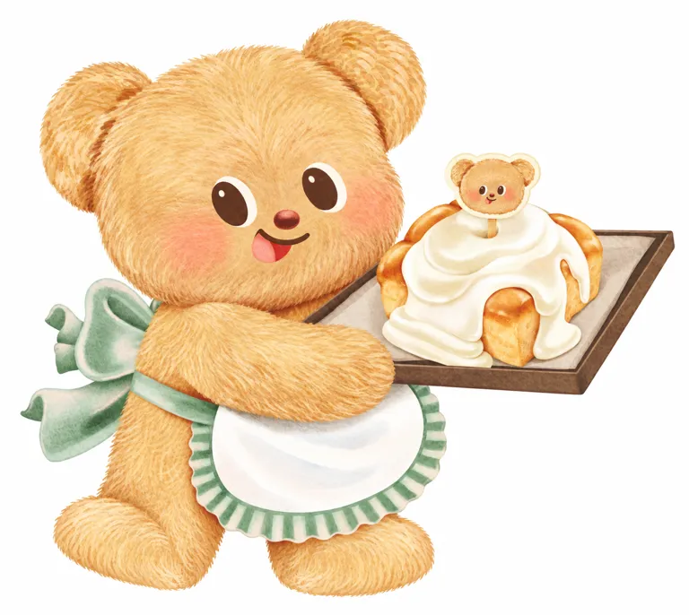
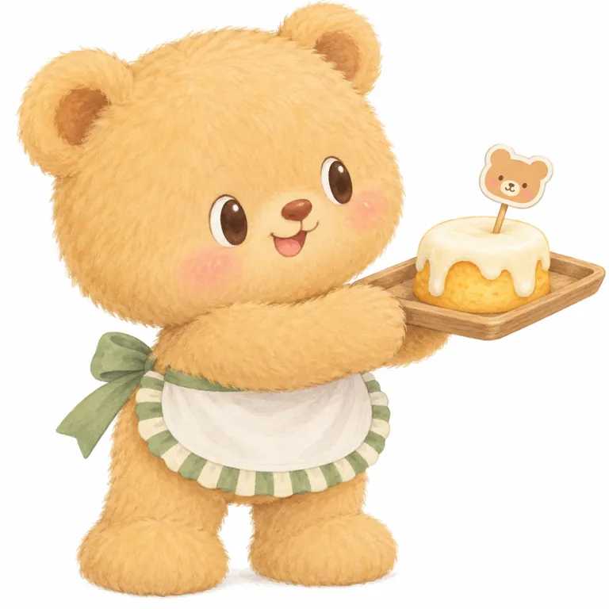

烘焙提供可以反复演出的日常。
V01端点心、V06店铺场景与真实烘焙业务相互呼应；小熊可以接待、分享、工作和过节。
边界：内容与商品的对应关系可观察，但未取得逐条内容的转化数据。
[A01] [A07]把一点甜，
变成每天想见的陪伴。
从创办者采访与官方商品，拆解形象、日常表演、跨境经营和三轮二维复现实测。

| 对象 | 可核实内容 | 证据边界 |
|---|---|---|
| 黄油小熊 / Butterbear | 本页聚焦Nong Noey（น้องเนย）；泰国烘焙业务中的角色。官方以童年快乐与温暖为表达。[A01] | “三岁”是虚构设定；不是IP诞生年或真人年龄。[A05] |
| 共同创办人 | Boom Thanawan Vongcharoenrat 与 Bell Thanapa Pangputhipong，来自Coffee Beans by Dao创办家庭。[A02] | 创办品牌，不等于亲自完成全部原画；视觉设计分工未核。 |
| 经营与合作 | 官网法律文本主体Butterbear Co., Ltd.；起重集展示多个中国合作案例。[A01] [A12] | 没有版权买断、股权及全球独家代理合同证据。 |
| 约2023年起盘 | 创办者称角色随线上业务第一天出现；2024年7月说品牌已一岁。[A02] | 是回溯年份。第三方公司登记日2023-03-22不能替代角色生日。[A03] |
它值得借鉴的是：给一个友好的角色安排持续可演的生活，让内容、现场和物件围绕同一个关系发生。脸部识别和运营关系需要同时研究，单看“金色毛绒熊”不足以解释它。
创办者回忆，希望把甜点带来的短暂快乐分享出去；角色与线上业务共同出现，经过快闪和内容试错才逐渐被注意。早期并非每次露面都有人驻足。[A02]
| 时间 | 转折与证据 | 类型 |
|---|---|---|
| 约2023 | 线上烘焙业务与角色共同出现。根据2024年7月创办者的一岁自述推定，精确首发日未知。 [A02] | 主体自述 |
| 2024上半年 | 快闪、舞蹈与门店内容逐渐获得关注；创办者回忆早期也有路人不理会。具体首店日期存在冲突。 [A02] | 主体自述 |
| 2024-08-05 | 泰国旅游局公布与Apo、Butterbear合作的六个月旅游推广。 [A05] | 事件记录 |
| 2026-02-21 / 22 | Buttery Day临时延期，保留原参与权。这里引用媒体对官方公告的转述。 [A11] | 事件记录 |
| 2026-06-26 | SNIDEL HOME联名推出；Furyu公布日本景品，6月下旬起投放。 [A08] [A09] | 事件记录 |
| 2026-09-03起 | Qualia迷你托特胶囊商品发售；各地铺货时间不同。 [A10] | 事件记录 |
起源、公司登记、首店开门、歌曲发行是不同事件。Emsphere日期在报道中有冲突，本页不拼成一个虚假的精确生日。
V01端点心、V06店铺场景与真实烘焙业务相互呼应；小熊可以接待、分享、工作和过节。
边界：内容与商品的对应关系可观察，但未取得逐条内容的转化数据。
[A01] [A07]官方旅游活动组织跟随角色旅行与见面，创办者谈到性格受反馈发展。
边界：现场名额、商场客流、媒体与明星渠道都可能贡献；不能把收入全归给跳舞。
[A02] [A05]V01与V03服饰不同而保留脸部；日本服装可拆熊和托特扩大使用场景。
边界：联名数量不等于复购或长期生命力，跨境运费和活动可达性会形成阻力。
[A08] [A10] [A11]| 行为 | 本轮有的证据 | 不能代替什么 |
|---|---|---|
| 喜欢 / 分享 | 创办者采访及官方活动描述；没有本轮直接评论样本。[A02] [A05] | 不能推定人群性别年龄，更不能代替购买。 |
| 到店 / 见面 | 旅游项目与活动安排可核；曾发生临时延期。[A05] [A11] | 到场意愿不等于成交和复购。 |
| 购买 / 经营 | 可核商品规格；公司财务有媒体报道。[A04] [A06] | 周边SKU净销量、退货与IP分部收入仍缺；不作因果归因。 |
时代窗口是待验证解释：烘焙提供线下入口，短视频适合传播动作，旅游与商场把观看变为见面。渠道、明星合作和供应条件都是替代解释，不能把“治愈需求”当万能答案。
脸宽、下颊鼓，两圆耳；眼为深棕竖椭圆带窄奶白眼白，红棕鼻下短弧与开口。手臂横过腹部托住右侧托盘，短脚外展。
研究解读 脸部组合与金麦色重复，围裙和端点心行为补充烘焙身份。
插画呈现短绒笔触与布褶，不提供真实材料、内骨架或尺寸证据。
官网插画；二维笔触模拟绒感，不是实拍
实际文件1700×1519；首次发布时间未知。图片仅外链引用。

同款围裙下有端点心、拥抱爱心、抬手、捧脸等动作；点心、袋子、蝴蝶结与角色混排。
研究解读 表情与手臂变化构成日常动作词汇；每格不是一个新角色。
平面印刷品；小图不足以鉴定纸张、涂层和印刷精度。
多格商品图；本轮只观察可见静态画面
实际文件860×860；首次发布时间未知。图片仅外链引用。

棕帽与粉色帽带、蓝格上衣、黄色背带裤；身体倾斜、一只手上举。圆耳、眼白眼型、鼻嘴与金麦身体仍可辨。
研究解读 围裙和绿色不是全角色必需；辨认重心转回脸部和宽圆体块。
蝴蝶是插画环境；不能据平面图断言帽子可拆或服装真实面料。
官网配图；图像创建日未知
实际文件391×300；首次发布时间未知。图片仅外链引用。

宽圆脸与短身体；眼鼻嘴可见线迹，嘴闭合，表面短毛。白围裙与浅蓝绿褶边，图中边缘未呈现插画细条纹。
研究解读 从插画到毛绒不是机械照搬：口型、毛面、褶边被重新适配。
23cm为官网规格；纤维未列，不能把无关模板文案当成分。可见缝制不等于已核内部结构。
黄底商品摄影；透视与光线影响颜色
实际文件1946×2276；首次发布时间未知。图片仅外链引用。

大圆头、圆耳、短笑嘴；红绿服装、条纹帽和袖，手臂举起缠灯线；周围有小毛绒与包装。
研究解读 角色可进入过节场景；衣服和灯光变化不应写成固定身体色。
表面毛面可见；人偶内部结构、扮演者与舒适度不可由照片推定。
官网摄影；暖光、场景与服装共同构色
实际文件1200×800；首次发布时间未知。图片仅外链引用。

小熊穿厨师帽及淡黄衣，绿白棚檐、格纹帘与软质店体构成售卖窗口。脚底浅色点可见。
研究解读 角色日常场所变成可摆放的商品，把“来店见她”缩成桌面场景。
官网列店体10×23×19cm、熊约12cm；照片中的招牌、花盆与背景是否全随盒附送需核包装清单。
官网商品摄影；背景含游乐设施虚化
实际文件1000×1000；首次发布时间未知。图片仅外链引用。
| 层级 | 跨图判断 | 变化边界 |
|---|---|---|
| 身份候选 | 宽圆鼓颊、圆耳、带浅眼白的深棕椭圆眼、红棕鼻与短笑嘴。 | 口型可变；不把单张笑弧当所有版本唯一形状。 |
| 比例与姿态 | 插画头大身短；人偶、毛绒的身体比例另作适配。 | 不能把透视尺寸当官方比例表；标准侧背面仍缺。 |
| 服饰与主题 | 绿白围裙是烘焙款常见形象；春日黄蓝、圣诞红绿改变装束。 | 围裙不是全部角色身份。 |
| 载体适配 | 围裙实物的褶边与插画条纹不同，脸部从绘制转为线迹。 | 对照具体SKU；不得把插画毛感当纤维证明。 |
以下HEX只作屏幕近似预览。未获得官方色卡，没有虚构面积百分比或Pantone。V01、V03、V04中的金麦／深棕／浅眼白关系反复出现；V05暖光与红绿服装必须单独理解。
插画可用细笔触写毛；实物会受绒长、线迹与布褶影响。V04的围裙边偏浅蓝绿，不能用屏幕色差推断批次质量。头像缩小、灰度、杂背景和真实5cm样品识别测试本轮未做。
价格采集于2026-10-20；泰国和日本分币种列示，不换算成统一“便宜/昂贵”排名。首发、常销与爆款缺少销量证据，本页不以售罄标签代替畅销判定。
| 样本 | 地区与价格 | 规格 / 发售 | 作用与限制 |
|---|---|---|---|
| A6围裙贴纸 | 泰国官网 · 75 THB | A6；首发日未知 | 平面动作合集，不是盲盒。[S01] |
| Signature Apron Plush | 泰国官网 · 750 THB | 23cm；毛绒，纤维未列 | 角色基础陪伴载体。[A06] |
| Plush Coffee Shop | 泰国官网 · 950 THB | 店体10×23×19cm；熊约12cm | 场景商品；完整附件清单待核。[A07] |
| SNIDEL HOME短裤 / 连帽衫 | 日本含税 · 7,920 / 12,100 JPY | 2026-06-26；3色，可按扣拆熊；连帽衫为棉混纺 | 服装与可拆角色结合，不推定销量。[A08] |
| Furyu超级BIG毛绒 | 日本景品 · 无统一零售价 | 2026年6月下旬；约36cm，1款 | 单次夹取费不等于一件售价。[A09] |
| Qualia迷你托特 | 日本含税 · 500 JPY | 2026-09-03起；5款，约23cm，本体聚酯 | 胶囊形式；铺货与库存因店而异。[A10] |
官网部分商品页的“Others”出现婴儿连衣裙模板文字，已剔除。国际运送采用DDU，进口税费另付；咖啡店商品页规定瑕疵换货需在收货后7天内联系，这些是使用门槛，不代表已知高故障率。[A06] [A07]
下表来自Bangkok Biz News引用DBD的报道，本轮未取得原始财报；保留报道数字，不作为已审计的IP收入。官网和联名发布也没有给出单SKU净销量。[A03] [A04]
| 年份 | 公司收入 · THB | 公司净利润 · THB | 核验等级 |
|---|---|---|---|
| 2023 | 740万 | 276,340 | 媒体转述 |
| 2024 | 5.44亿 | 2.12亿 | 媒体转述，舍入值 |
| 2025 | 5.77亿 | 2.17亿 | 媒体转述，舍入值 |
泰国旅游局曾预计推广带动5亿THB旅游收入。这是活动目标，未核兑现；同稿的400万粉丝属于演员Apo，也不能算到熊名下。[A05]
起重集案例页列出CACO、CASETiFY、ZARA、瑞幸等合作展示；这些支持渠道扩展的观察，不能推出独家合同、销量或收购。[A12]
创办者回忆早期快闪也被路人忽略。后来的成功不能反推初始形象必然有效。
[A02]2026年2月两日活动临时延期，媒体称部分远行粉丝不便改日。这是具体可达性问题，不泛化为长期失败。
[A11]税费、物流、换货时限与地区库存影响体验。没有代表性差评样本，不给虚构满意度。
[A06] [A07] [A10]对照思路：本库线条小狗的内容单位偏向可发送的关系动作；黄油小熊更值得检验现场与角色日常。这是机制比较，不是IP优劣排名。没有可靠证据的失败款、质量召回和扮演者猜测未采用。
已目检同一目标的脸部、比例、色块与遮挡。仅适用于V01既有插画的二维重绘；不是纯文字通过、官方母版、量产验收或用户认可。实物与原创阶段未继续。

宽圆脸、眼白眼型、独立鼻笑弧、短脚、围裙及托盘遮挡均接近；金麦/奶白/冷绿分区接近。 只限V01既有构图二维重绘；毛笔触对比更强，围裙褶边、奶油细节有轻微差异。
以附图作为唯一角色与构图参考，把它重绘为白底二维彩色插画。保留同一只金麦色小熊的宽圆脸、原有头倾角度、耳朵形状和位置、眼睛尺寸与距离、深棕椭圆眼及奶白眼白、单个白色眼高光、红棕鼻、无竖直鼻嘴连线的短笑弧、偏左的红色嘴内与粉色舌。准确保持原图头身比例、双脚向两侧伸出、前景手臂横过身体和托住托盘的遮挡关系。保留腰部白色半圆围裙、冷鼠尾草绿腰带与左后侧大蝴蝶结、绿白细条纹荷叶边；不是胸前背带裙。保留右侧斜向上展开的长方形托盘、金黄色起伏点心外皮、厚白色流淌奶油以及顶部木签上的同脸熊头小纸牌。仍是二维插画里细密短笔触模拟软绒，不添加真实摄影、3D玩具光泽、额外长绒或塑料感。不重新设计脸，不把眼缩成点或放大成玻璃眼，不加白口鼻罩、人中线、眉毛、睫毛、爪线。原图透明区全部改成纯白，完整显示角色、脚和托盘，画面四周少量白边，无字、无标志、无影棚投影。主体身份、既有动作和金麦色／奶白／冷绿区域优先于绘画装饰。下载实际执行原文 · 打开所需原参考图 ↗

鼻与嘴被竖线连成常见泰迪表情；眼白范围偏大，脚偏直，托盘和点心形变。
修订理由：去掉鼻嘴连线，缩眼、压短腿，收窄围裙条纹。
生成一张白底二维绘本商品插画，单只浅金麦色小熊全身，画面无字无标志。保持细柔短绒的手绘笔触，不能变成真实摄影或塑料三维渲染。角色头朝画面右侧轻倾，头很宽，额顶微平、两颊圆鼓，头宽约占整个角色身体加手臂宽度的四分之三；两只圆耳在头顶左右，耳内略深金棕。躯干短胖，头高约等于躯干加腿高；双脚短厚，朝左右分开，脚无爪线。脸部在脸下半部，两只竖向深棕椭圆眼带奶白色外侧眼白和单个左上白色小高光，眼距约一只眼宽；没有眉毛和睫毛。小红棕椭圆鼻居中，鼻下不是凸白口鼻罩。短深棕上扬笑弧，下方有偏左小红色开口和浅粉舌，双颊柔和桃粉色。穿仅从腰部开始的白色半圆围裙，围裙边缘是鼠尾草绿与奶白交替细条纹荷叶边，绿色腰带在画面左后侧扎大蝴蝶结，没有胸前背带。两条短粗手臂向画面右侧并拢伸出，托着右上斜置的浅棕长方形烘焙托盘，托盘上只有一个金黄色圆形小蛋糕，白色奶油向四面流下来，顶端插一根短木签与一枚小熊脸纸牌，纸牌不含字。主熊的双手遮挡托盘左下边缘。小熊占画面大部分，托盘伸向右侧，主体完整留白，保留二维软笔触和轻柔体积色差，不画摄影投影、背景家具、额外角色或衣服。下载测试原文
鼻嘴连线已消失，但眼睛偏小、鼻偏大，毛感更写实、冷绿偏橄榄，托盘遮挡与点心仍偏离。
修订理由：文字仍未锁定脸部与构图；另测参考辅助，不把两种模式混称。
生成一张白底二维手绘商品插画，单只浅金麦色小熊全身，画面无字无标志。它是平面插画中用细密短笔触表现软绒，不能做摄影、塑料渲染或普通长毛泰迪熊。头宽而扁圆，上缘略平，两侧耳朵圆，头宽约为头高的1.25倍；头朝画面右侧轻倾。脸颊饱满外鼓，下颌宽，不收尖。两只竖向深棕椭圆眼较小：每眼高度约头高六分之一，眼中心距约眼宽三倍，瞳孔占眼面积大半，奶白眼白主要是一道窄月牙在眼的右侧与上缘，每眼只一个左上小白高光。眼轴随头倾斜，眼睛不立体突出。无眉毛睫毛。红棕扁椭圆小鼻在两眼中间偏下；鼻下不要人中竖线、不要Y字嘴、不要白口鼻罩。嘴是与鼻分离的一道短棕色上扬弧，弧下左半有红色小开口和浅粉小舌，两颊桃粉晕染。身体很短胖，头高度约占不含耳全身高度的一半以上，双腿极短，脚向两侧展开而不是站成直立柱，脚无爪线。两条粗圆短臂朝右上方伸出，前景手臂水平横过胸腹，远侧手臂部分遮在身后，双手托住向右上方倾斜的浅棕长方形托盘，托盘边直，不是圆角饭盘。托盘只放一个金黄起伏外皮的圆形小蛋糕，流淌奶油顶有旋转尖，顶端插一根短木签，木签上是一枚相同小熊脸小纸牌，无字。围裙仅从腰部起，正面白色半圆，腰带鼠尾草绿；外围一圈绿白细条纹褶边，条纹窄密，不能宽棋盘格。绿色大蝴蝶结在画面左侧腰后展开。两脚、围裙底及托盘均完整显示，主熊占画面四分之三，托盘向右伸出。整体金色偏饱满，鼠尾草绿偏冷不发黄；不要大的白眼圈、尖鼻、粗长鼻嘴连线、红领结、衣服肩带、影棚阴影、地面、背景家具。下载测试原文
这是根据可见作品重建的研究提示词，不是作者原始指令，也不证明原作由AI制作。中文已测不代表英文已测；黑白原创找形、英文和实物概念均未发布为可用文本。
先寻找能持续发生的小日常：谁在何时需要一句轻松的回应；不要只写“治愈可爱”。
可借圆软轮廓与清晰眼鼻关系的层级方法；须另建原型、比例及五官身份，不复用整组脸与围裙。
让服装/场景更新服务固定性格；毛绒、印花、人偶分别验证脸部可读性、缝线与穿着活动性。
小红书本轮连接在读取标签前失败，两组站内搜索未完成；公开搜索未取得可采用笔记。没有把媒体概括冒充直接用户访谈。
截止2026-10-20。官方自述、产品规格、原采访与媒体转述分别保留。同一品牌的多个页面不是独立用户研究。所有原图版权属于其权利人，本页只外链引用；生成图单独标注。
官网自述与当前门店清单不证明具体创作日、版权转让、股权比例；页脚 ©2024 不等于创立年。
打开来源 ↗关联原件 / 补充页 ↗body_read
这是创办者回忆，不是独立因果实验。正文将 Emsphere 店开业写为2024泼水节，与常见2023年底说法冲突，具体日期暂不定。不能据品牌创办人身份推断两人亲自完成全部原画或法律版权归属。
打开来源 ↗关联原件 / 补充页 ↗body_read
第三方汇集政府开放数据，并非此次直接取得的登记原件；公司注册日不等于角色诞生日。其财务报表需登录，未读。源页链接的 DBD 公司档案403，未能独立核原件。
打开来源 ↗关联原件 / 补充页 ↗blocked_403
这是媒体转述公司报表，未取得原始报表。不能记成独立IP授权收入、零售GMV或个人收入。正文未显示文章发布日期；页首2026-10-20是网站当日日期，不据此标为发布日。仅保留原报道舍入值，不计算精确增长或市占。
打开来源 ↗500百万是预计旅游经济带动目标，不是实际结果，更不是熊或其公司收入。文中的400万社交粉丝属于演员 Apo，不能归熊。
打开来源 ↗现价和地区口径截至访问日，非首发价。未列出可核纤维比例；Others段出现无关婴儿连衣裙文字，视为模板污染，不作为商品资料。
打开来源 ↗材料具体纤维未明；不使用页面无关婴儿连衣裙模板文案。售后政策说明规则，不能当成已发生高瑕疵率证据。
打开来源 ↗品牌发布可证发售规格，不证销量。不同商品材料不能互相套用，未获得纤维比例或尺寸表。
打开来源 ↗夹娃娃机景品无统一单件零售价，不填写虚构零售价或保底获取成本。发布稿不等于所有门店同日有货。
打开来源 ↗各地区投放有时间差；产品页门店列表明确库存可能不同，不能视为实时库存。约23cm为公告表述，不擅自补全长宽高。
打开来源 ↗关联原件 / 补充页 ↗body_read
官方原始社交帖子未独立读取，正文转述及展示截图；不能把记者概括当作粉丝抽样统计。不讨论或猜测玩偶内的人、具体健康问题，也不能泛化为长期运营失败。
打开来源 ↗可证起重集公开展示这些合作案例，不能仅据此断言独家总代、合同地区期限、商标所有权、收购或各项目销量。关于页重试超时，角色页超时；没有据搜索摘要补写合同。
打开来源 ↗A6贴纸，75THB；当前标价，非首发时间；无关婴儿连衣裙模板文案未采用。
打开来源 ↗署名品牌传播稿：小黄油系列首周1333万杯，非独立审计及IP贡献拆分。
打开来源 ↗少量受访者的到访与购买行为，不代表全体；商场指标为商场自报，不是IP净销售。
打开来源 ↗